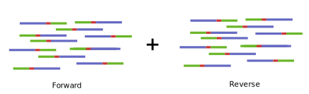

Walkthrough: Library and Barcode Project Analysis
Introduction
In the Library Analysis Pipeline, we use paired-end, short read sequencing and trade traditional alignment, for a method where we remove the identical regions surrounding a small variable region and tally the unique occurrences of the region of interest. After identifying and extracting the ROI, you can discover hits by calculating enrichment and characterizing the represented sequences.
In a library or barcode study, all paired reads should have an identical structure.
Input
Rather than a map, the analysis requires the expected identity of the regions flanking the sequence of interest. With the ROI in the center, the “adapters” and ROI should make up the entire length of the amplicon.
The 5’ and 3’ “Adapters” should be nearly identical across all reads. These adapters will be trimmed so that we can extract the unique library members.
Step 1: Join paired-end reads

When using paired end reads, there should be a few bases of overlapping region that can be used to properly align reads.
In traditional alignment, paired end reads are joined by the mapping software during the alignment process. Here we must join the paired reads using fastq-join a software specific to joining reads without alignment. To read more about fastq-join please see their github.
Parameters Used:
-p 10 - the overlapping region can not exceed 10% difference in similarity
Step 2: Take the reverse compliment and concatenate to foward joined reads
Using the tool fastx_reverse_compliment from FASTX_toolkit, the joined reads are reversed and reverse reads are added to the end of the reads list in the joined fastq file. The purpose of this is to ensure that ampljcons that were accidently reversed in seqeuncing included in the final library counts. For more information on fastx_reverse_compliment, see the FASTX_toolkit webpage
NOTE: This step should double your joined reads file size. Reads already in the correct orientation will not be double counted from this step.

Step 3: Trim “adapters”
Cutadapt is a tool used to “find and remove adapter sequences, primers, poly-A tails and other types of unwanted sequence from your high-throughput sequencing reads”. Here the flanking sequences we call “adapters”, aren’t adapters by the standard definition. We call them “adapters” to indicate that they are unwanted sequences and should be trimmed before analysis.
The expected identity of the sequences are used to mark what should be trimmed and unmatched reads are discarded. The trimming of adapters is error tolerant, allowing for mismatch between the expected adapters and actual reads. The 3’ adapter is trimmed first, followed by the 5’ leaving only the region of interest in a fastq format.
The 3’ adapter is trimmed first, followed by the 5’ leaving only the region of interest in a fastq format.
Parameters Used:
- -a / -g - specifies 3’ or 5’regular adapters
- -m 6 - minimum length, set during the 5’ adapter trimming step, any read under the specified length 6 will be discarded.
- Default Maximum Error Rate - though not specified, the maximum error rate can not exceed 10%
Step 4: Quality trim and tally sequences
ROI reads are then filtered for quality using fastq_quality_filter and converted to fasta format using fastq_to_fasta, both tools also come from FASTX_toolkit. A basic R script is run to tally unique library sequences and a tab-separated file is produced with the sequence in the first column and number of occurrences in the second.
#### Parameters Used:
- -q 20 - phred based quality score of 20
- -p 100 - percent of bases that must meet phred quality score minimum is 100%
Pre-Downstream Analysis Steps: Translating seqeunces, normalizing counts to reads per million, and optional filters**
Once the main pipeline is complete, the next steps are flexible based on what the project requires. Most projects will included translation of the nucleic acid sequences to peptide sequences, normalizing reads by rpm, and a few optional library filters including filters by length, stop codon removal, oligo lists, cheater sequences, and more.